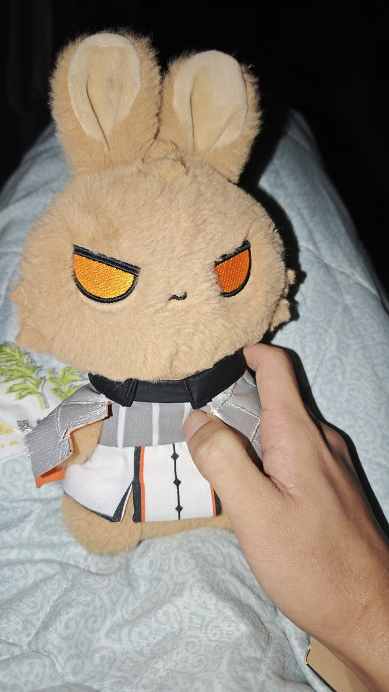
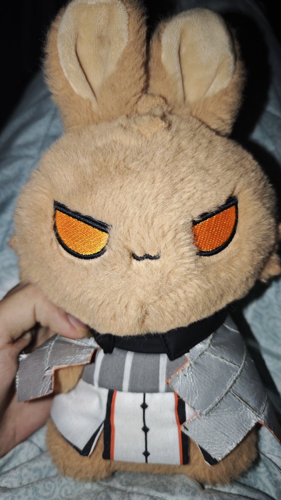

钉宫银琳
@DingGongYinLin
@linqin_loveme 晚安喵


林檎k
@linqin_loveme
晚安晚安啦各位，今天依旧是小兔子妃子侍寝，翻牌子一下就翻到了这只小兔子（虽然其实是其他几只兔子太娇弱了不敢碰）
图一我的小兔子居然不乐意，所以我教训了一下，图二看贴个大脸，虽然还是有点不情愿，图三我的小兔子还是从了我ᗜ𐃷ᗜ˶ಣ
小火龙兔子，我的小妃子，你逃不了的啦ᗜ𐃷ᗜ˶ಣ https://t.co/6RHrcm16BL